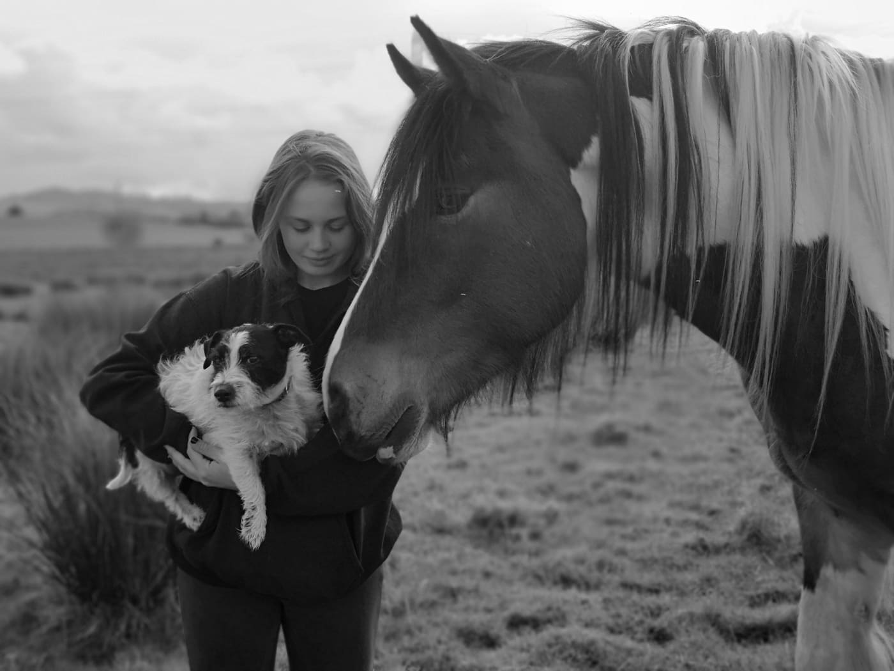

Community Playfulness Education Inclusion Diversity
A community of people and animals playing, learning and building memories together.
Our Story
Plaited Ponies was founded in 2018 by Angela Hickman and her daughter Gracie. In the years leading up to 2018, Angela and Gracie were performing high-quality freelance equestrian care and jobs such as horse maintenance and stable management. With her excellent reputation and skillset, Angela decided to open a location of her own where people could share their love for all things equestrian and founded Plaited Ponies. Since then the business has grown to 2 locations: Tanahken; the friendly yard dedicated to Pony Parties, Riding Lessons and more. The Crofts; the beautiful yard for livery services. We at Plaited Ponies are determined to provide you and your loved ones with high-quality, safe and memorable experiences and take great pride in our ability and reputation.
